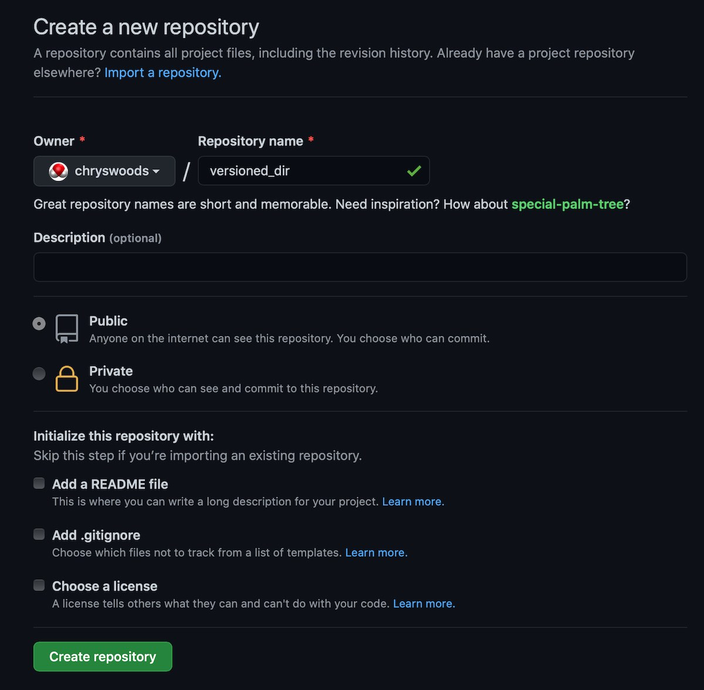
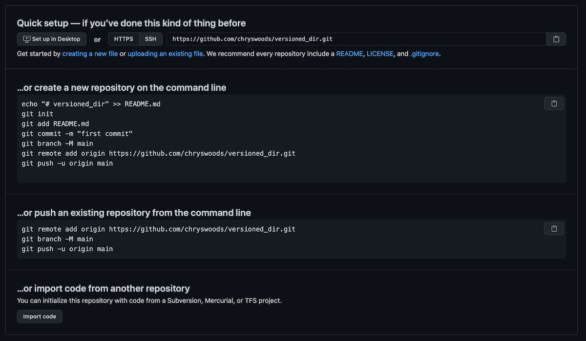

Backing up to the cloud (GitHub)
A question you may have, is where is the repository stored? Where are all of the versions of the directory that you have saved?
The can be found by typing;
ls -aThis will list all files, including hidden files in the directory.
You should see something that looks like this;
.git README.md background.md notes.mdNotice that there is an extra hidden file called .git in your directory. This is actually a hidden directory, which you can explore via
ls .gitOn my computer, the .git directory contains
COMMIT_EDITMSG config hooks info objects
HEAD description index logs refsThe .git directory is where git saves the entire repository, and thus all versions of all files that have been committed.
!!!YOU MUST NOT EDIT OR CHANGE THE .git DIRECTORY IN ANY WAY!!!
If you edit or change this directory you will break git, and thus lose all of the old versions of files that were committed to the repository.
Because the .git folder is saved in versioned_dir, this means that it will be removed if versioned_dir is removed. This means that if you accidentally delete versioned_dir, then you will also have deleted the entire git repository. You will thus not be able to recover or restore the files.
Equally, if your computer is lost or breaks, then this may also mean that versioned_dir and the .git directory contained within is also lost.
** Git is NOT a backup tool. It only version controls your files. It DOES NOT back them up **
Backing up your files
One way to back up versioned_dir is to zip (or tar) it into a zip file (or tarball), and then copy that zip file (or tarball) to another computer, a USB drive, or upload it to network storage (e.g. DropBox, OneDrive, Google Drive etc).
This would back up the data, but it would not be very convenient. You would have to remember to back up regularly, else you would risk losing data between backups.
Git hosting services
An alternative to backing up manually is to use a git backup service. These are online services that store a backup of your .git folder. There are special commands in git that then integrate with these services, and which make backing up and restoring very easy and straightforward.
There are many online git backup services, ranging from simple servers that you can set up yourself, through to large platforms that integrate git backup with a range of extra offerings (e.g. bug tracking, issues, release management, web hosting etc).
The three most established large platforms are GitHub, GitLab and BitBucket. Of the three, GitHub is the one most people know. Indeed, you may have come to this workshop thinking that git and GitHub were the same thing (or maybe you didn’t really understand what the difference was between them).
To emphasise, git is the open source and free tool for version control. GitHub is an online platform that integrates a free .git backup service with a range of extra developer tools.
GitHub
GitHub is my favorite platform and I use it the most for a range of academic and personal projects. GitHub is free for public repositories (those that can be viewed by anyone, anywhere), and you can have a small number of private projects (those that only you have access to).
Installing a Git Credential Helper
Before you use GitHub, you need to install a “Git credential manager”. This is a program that will let your git command-line client manage the login credentials needed to connect to your GitHub account.
You can install a “Git credential manager” by following the instructions here. This credential manager is available for Linux, MacOS and Windows. Note that the “Git credential manager” is included with Git for Windows and would have been installed by default as long as you left “Git Credential Manager Core” selected.
Creating a GitHub account
To use GitHub, register to create an account, and the log in. Once you have logged in, click the “New Repository” button to create a new repository (this button is in the menu of the “+” button at the top right of the page).
This will bring you to the page to create a new repository. The page will look something like this (possibly different colours or layout);

Choose a name for your repository. I’ve used versioned_dir, as this is what I called the directory on my computer. You can use any name you want, and it does not need to match the name on your computer.
I’ve left the repository type to “Public” (meaning everything is published openly), and am not initialising the repository with anything (as we will be uploading our existing versioned_dir in the next step).
Click “Create Repository” to create the new repository. It will start off being empty, and something like this page should be seen.

This page gives instructions for the three different ways that you can add files to this repository. In this case, we will use the “push an existing repository from the command line” option. The commands to do this are written on the page, so we will copy and paste;
git remote add origin https://github.com/ab01234/versioned_dir.git git push -u origin main
(note that we have already renamed `master` to `main`, so don't need to run the
second command. Also note that you will need to copy and paste your command - it
will have your GitHub username in the repository URL).
If this is the first time you have used GitHub, then it is likely that you
will be asked to log in when you ran the ``git push`` command. The method
you use to log in will depend on your account and operating system. In most
cases, the easiest is to use the option to log in via your web browser.
This will open a tab in your browser and will ask you to log in there
with your GitHub username and password (and possibly multi-factor authenticator
too).
Assuming you could log in correctly, then you should see output that looks
something like this;
Enumerating objects: 21, done. Counting objects: 100% (21/21), done. Delta compression using up to 8 threads Compressing objects: 100% (16/16), done. Writing objects: 100% (21/21), 2.23 KiB | 2.23 MiB/s, done. Total 21 (delta 5), reused 0 (delta 0) remote: Resolving deltas: 100% (5/5), done. To https://github.com/ab01234/versioned_dir.git * [new branch] main -> main Branch ‘main’ set up to track remote branch ‘main’ from ‘origin’.
This shows that our local versions in our `.git` folder have been pushed up to
the `.git` folder on GitHub (in my case `https://github.com/ab01234/versioned_dir.git`).
Git has also been set up so that the local `main` on our computer is set
to track the remote `main` on GitHub.
If you refresh the GitHub page you should now see that your files have been
uploaded, e.g.

You can use the GitHub interface to explore the files in your repository. For example,
you can navigate to any version in the repository by clicking the "Commits" (the "9 commits"
on the right). This will show all of the versions that have been saved, together with the
log messages. Cool :-)

## Backing up new changes
You have now backed up the `.git` directory of `versioned_dir` to GitHub. But what
if we make new changes and save new versions?
Let's change `README.md`, e.g. by changing the last line to read;
will say that the cat goes meow and kittens are cute.
Commit this change to the repository using
```{.bash}
git commit -aNow run git status. You should see output that looks something like this;
On branch main
Your branch is ahead of 'origin/main' by 1 commit.
(use "git push" to publish your local commits)
nothing to commit, working tree cleanThis shows that git knows that your working tree is clean, but that the main in your local repository now has one commit more than the main on GitHub. It is ahead of GitHub by 1 commit. We can send this new commit to GitHub using the command git push. Type this now;
git pushYou should see output that looks something like this;
Enumerating objects: 5, done.
Counting objects: 100% (5/5), done.
Delta compression using up to 8 threads
Compressing objects: 100% (3/3), done.
Writing objects: 100% (3/3), 396 bytes | 396.00 KiB/s, done.
Total 3 (delta 1), reused 0 (delta 0)
remote: Resolving deltas: 100% (1/1), completed with 1 local object.
To https://github.com/ab01234/versioned_dir.git
20be956..38db1ae main -> mainThis shows that the new commit has been pushed (uploaded) from your local main in your local .git folder and copied to the main in the .git folder on GitHub.
If you type git status again, you should see output like this;
On branch main
Your branch is up to date with 'origin/main'.
nothing to commit, working tree cleanThis shows that your local main is up to date and level with the remote main on GitHub.
Git Cheat Sheet
We have one new command, git push, that pushes (backs up) versions that are committed locally to a remote git hosting service. This completes our Cheat Sheet.
PUBLIC REPOSITORIES ARE PUBLIC!
That means that anyone in the World can read everything within them, including all of your commit messages.
NEVER push passwords or sensitive data to the repository. Make sure that you never save a password in a version controlled directory, or else you risk accidentally uploading it to the cloud.
NEVER push private or unpublished research data. By pushing to a public repository you are making the file (and all its previous versions) public. Don’t push a file that you don’t have permission to publish. Don’t push sensitive or private research data. Don’t push grant proposals or research papers (at least, not before they have been awarded or published!).
BE CAREFUL of offensive commit messages. It is a bad idea to be abusive or condescending in your commit messages, particularly as they will become public when you push them into a public repository. Avoid commit messages like “Fixed this annoying piece of rubbish code written by Fred”, as “Fred” is likely to see that comment once it is published.